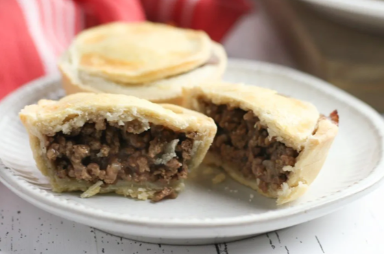
Entrees
Ingredients
- 1½ lbs ground beef
- 1 onion, small
- ½ cup beef broth or 1 beef bouillon cube
- 1 tsp mustard powder
- 1 tsp Worcestershire sauce
- 1 cup oats (acutal oats, not oatmeal)
- 1 tsp Lawry's seasoned salt
- ½ tsp nutmeg
- ¼ tsp pepper
- ½ tsp salt
- 1 pastry for double-crust pie or 2 ready-made pie crusts
- ⅛ cup butter
- ⅛ to ¼ tsp ground cloves (optional)
- HP Sauce to taste
Directions
- Preheat oven to 350° F and put a kettle of water on to boil.
- Place one pie crust in a deep-style pie pan. Prick crust with a fork several times and bake for 5-10 minutes.
- In a large skillet with deep sides, sauté ground beef/lamb with onions. Season well with Lawry's, salt and pepper. Mix well to combine.
- When beef loses its pink color, stir in oats and beef broth or bullion cube. Then cover mixture entirely with boiling water. Simmer mixture for 10-15 minutes until water is mostly gone. Then stir in Worcestershire Sauce, dry mustard and spices.
- Spoon the mixture into the partially baked pie crust and dot the top of the filling with diced butter. Place top crust on filling, crimp sides, vent crust, and bake for 1 to 1¼ hours. Make sure crust is slightly browned.
- Let stand for five minutes before serving.
- You can top with some HP sauce to add a bit of tangy goodness if you like.
Submitted by Steven Dockery
I grew up playing Trad music (Scottish/Irish/Breton music). I've played the highland bagpipes for almost 25 years and won solo and band prizes at the Scottish games throughout the southeast US. If you've ever been to the Scottish games, you know food is a big part, and my favorite memories from going to the games over the years always involves a warm, delicious, and filling meat pie. As a kid, a meat pie and an Irn-Bru soda always hit the spot. As an adult, a meat pie and a brown ale or stout is just the ticket for a cool fall or winter day.
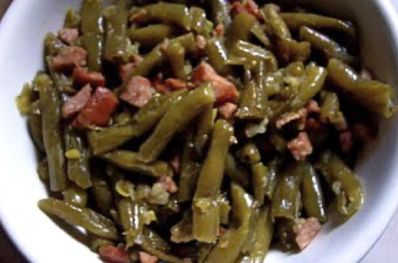
Family Style Green Beans
Prep Time: 10 min | Cook Time: 15 min | Total Time: 25 min
Ingredients
- Canned green beans
- Smoked turkey necks
- Frozen Season Blend to taste
- 1 box chicken broth
- Lawry's Seasoned Salt to taste
- Just a little olive oil
- Love
Directions
- Head up olive oil on medium heat.
- Add seasoned blend to the pan and allow to saute and cook down a little.
- Cover with Lawry's Seasoned Salt and Frozen Seasoned Blend.
- Add smoked turkey necks.
- Drain green beans and add to pot.
- Cover green beans with chicken broth.
- Allow green beans to boil then set to simmer (continue to stir while boiling).
- Enjoy!
Submitted by Leslie Moore
I always wanted a signature dish to make when we had gatherings pre-COVID19 whether it was for a potluck or just with friends and family. I asked my good friend who is an amazing cook to teach me how she made her green beans which are one of my favorite veggies. Her response was "Green Beans! I just throw them in a pan!" The way they taste every time I make them, makes me feel like I am the Matriarch of my family! They taste like I've been cooking for decades but the recipe is very simple.
*small tip: In our black community it is rare that we measure ingredients out so if you feel like you put enough... just add a little more but remember you can never add enough love!
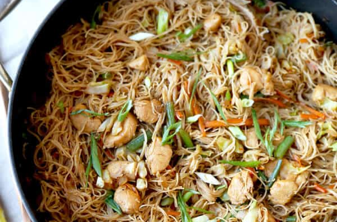
Pancit
Prep Time: 10 min | Cook Time: 10 min | Total Time: 20 min
Ingredients
- 1 tbsp peanut oil (or vegetable oil)
- 1 lb boneless, skinless chicken breast (sliced into bite-sized pieces)
- 2 cloves garlic (finely chopped)
- 1 small onion (finely chopped)
- 8 oz pack bihon noodles, vermicelli noodles, or rice noodles
- 1½ cups mixed vegetables, such as: carrots, cabbage and green beans, and scallions (chopped to bite size)
- salt and pepper to taste
- lemon wedges (optional)
Pancit Sauce:
- 2 cups low sodium chicken stock
- 2 tbsp dark soy sauce
- 2 tbsp soy sauce
- 1 tbsp oyster sauce
- 1 tsp sugar
Directions
- In a wok or a large pan over medium heat, add oil and chicken and cook until tender. Transfer to a plate and set aside.
- Add garlic and onion and cook for 2 minutes. Add the cooked chicken and season with a little salt and pepper.
- Stir in the veggies and cook for another 3-4 minutes or until a little tender.
- Add all the ingredients for the pancit sauce and bring to a boil.
- Add rice noodles and stir until all the noodles are coated with the sauce. Keep on stirring and cooking until the noodles are tender (3-4 minutes).
- Add more stock (or water) if the dish is dry before the noodles are tender.
- Season with salt and pepper and more soy sauce if necessary. Serve immediately with lemon wedges.
Submitted by Courtney Ignacio
This is a well known Filipino dish, I grew up eating it :)
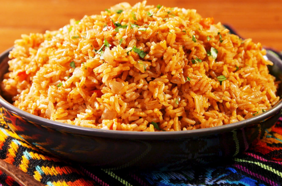
Bob's Spanish Rice
Prep Time: 5 min | Cook Time: 30 min | Total Time: 35 min
Ingredients
- 1 cup white rice
- 2 cups chicken broth (or 16 oz can)
- 1 tomato, diced
- 1 tbsp oil
- salt and pepper, to taste
Directions
- In a large sauce pan, add oil and rice, heat to medium heat, brown the rice for 5 minutes, stirring constantly.
- Add diced tomato, stir for 3 more minutes.
- Add 2 cups chicken broth, stir well, lower heat to simmer, and cover sauce pan for 20 minutes.
- Stir rice occasionally, make sure heat is not to high and burns rice. Broth will cook into the rice. Cook until rice is fluffy.
- Add salt and pepper, to taste.
Submitted by Bob Ruybal
We eat Spanish Rice with our Tamales, Enchiladas and Chili Rellenos
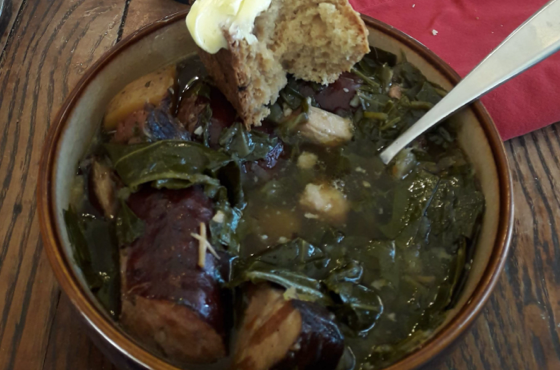
Murphy Family Coddle
Prep Time: 30 min | Cook Time: 4-5 hrs | Total Time: 4-5 hrs
Ingredients
- 1 lb pork belly (or 1 lb thick cut bacon)
- 1 lb pork sasuages (suggested varieties include kielbasa, Andouille, Italian, or whatever you like)
- 3-4 lbs potatoes
- 2 large yellow onions
- 1 bundle fresh washed collard greens, mustard, or kale
- 2 cups chicken stock
- 4 cloves garlic, diced
- 3 tbsp fresh chopped parsley
- 1 can Guinness stout
- salt
- pepper
Directions
- If using whole russet potatoes, wash and peel first, if using smaller red potatoes, wash thoroughly, and then chop the potatoes into 2 inch chunks, set aside in cold water.
- If pork belly came skin on, remove skin first, then cube pork belly into 1 inch squares. If using thick cut bacon, rough chop bacon into 1 inch slices and then brown your pork belly (bacon) in the bottom of a large stock pot.
- Once browned, remove pork belly (bacon) and set aside on a paper towel and brown your sausages if they are not pre cooked.
- Once browned, slice the sausages into large pieces and set aside.
- Preheat your oven to 300 deg Fahrenheit
- In remaining pork belly and sausage fat, sauté your chopped onions until translucent, and add in chopped garlic once onions are sweat through.
- In stock pot, start layering ingredients. Onions, pork belly, sausage and then potatoes. Each layer should be seasoned liberally with salt and pepper and then parsley. Continue layering until all ingredients are used.
- Pour stock and one can of Guinness over mixture and add water if needed to just cover the ingredients.
- On the stove top, place the stock pot over med high heat and bring to a boil.
- Once at a boil, rough chop you thoroughly washed greens and start adding to pot in handfuls and allow to wilt in.
- Cover stock pot and place it in oven for 3-4 hours checking occasionally to make sure there is still liquid in the pot, add water or more Guinness if needed.
- After pot has been in the oven 3-4 hours turn off the oven, and place pot back on stovetop over low heat until ready to serve. (Note: you can also let cool and cover and store in your refrigerator for serving at a later date or time as well, just reheat on stove top over med low heat.)
Submitted by Sean Murphy
I was looking for a new recipe for St Patrick's day as it was always tradition in my house growing up to have corned beef and cabbage, however my wife Erin is not a fan of Corned Beef. So, in looking for other traditional Irish Recipes, we came across a dish called "Dublin Coddle". In researching the dish, it was found that there is really no one way to make this, it varies from house to house, but the basic potatoes, sausage, onion and parsley seemed to permeate through all varieties. Since we were both raised in North Carolina, we decided to add Greens to our variety of Coddle and we now make this each and every year at St Patrick's day with a side of Irish Soda bread and we have all of our neighbors over to share.
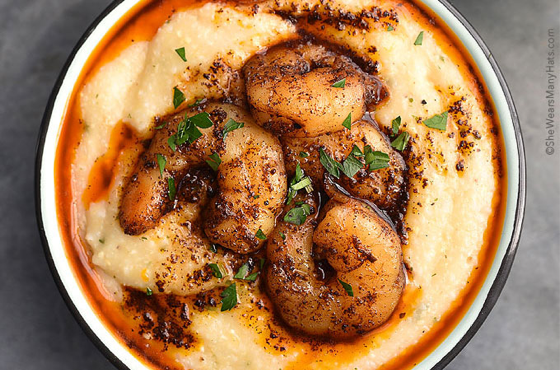
Shrimp and Grits
Prep Time: 1 hr | Cook Time: 20 min | Total Time: 80 min
Ingredients
- 1 lb large, peeled and deveined shrimp
- 1 lemon, zested and juiced
- 1 tsp salt
- ¼ tsp frehly grated black pepper
- 1 tsp old bay seasoning
- ¼ tsp crushed red pepper flakes
- 2 tbsp olive oil
- 3 cups chicken stock
- 1 cup yellow stone ground grits
- ½ cup heavy cream
- ⅓ cup extra sharp shredded cheddar cheese
- 2 garlic cloves, crushed
- 1 lb heirloom tomatoes, diced
- 2 oz unsalted butter
- 2 scallions, thinly sliced
- 4 lemon wedges
Directions
- Place shrimp in a bowl and add half the salt, the pepper, old bay, and crushed red pepper. Toss gently and set aside.
- Prepare the grits: bring stock to a boil. Add the remaining salt, and slowly wisk the grits in. Reduce the heat to low. Cook the grits for 15 min stirring often. When the grits are close to done, whisk in the heavy cream and then gently whisk in the cheese. If the grits are too thick, add a little more stock. If they are thin, cook another 1-2 min. Set them aside.
- Add olive oil to the saute pan and bring to medium heat for cooking the shrimp. Cook 1-2 min per side (until shrimp is pink) Add garlic and saute about 1 more min. Add tomatoes and lemon and cook 1-2 more minutes. Add butter until melted and adjust seasoning as desired.
- Divide the grits into 4 bowls and top with the shrimp / tomato mixture. Garnish with scallions and lemon wedges. Serve immediately.
Submitted by Karin Davies
I think shrimp and grits is considered a quintessential "new" Southern dish :-)
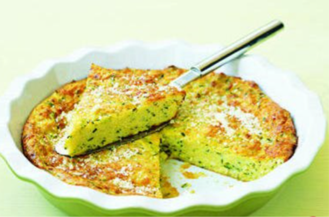
Lesley's Zucchini Pie
Prep Time: 000 min | Cook Time: 000 min | Total Time: 000 min
Ingredients
- 4 cups thinly sliced zucchini
- 1½ cups chopped onion
- ½ cup butter or margarine
- ½ tsp salt
- ½ tsp pepper
- ½ cup fresh chopped parsley
- ¼ tsp garlic powder
- ¼ tsp fresh basil
- ¼ tsp oregano
- 8 oz can Pillsbury Crescent Rolls
- 2 tsp Dijon mustard
- 2 eggs, well beaten
- 8 oz (2 cups) shredded cheese: Cheddar/Colby, or whatever cheese you like
Directions
- Head oven to 375 F.
- In skillet, cook zucchini and onion in butter until tender. Stir in parlsey and seasonings
- In a large bowl, blend eggs and cheese.
- Separate dough into 8 triangles. Place in ungreased 11" quiche or 10" pie pan; press over bottom and up sides to form crust.
- Spread crust with mustard.
- After zucchini is cooked, drain and let cool about 15 minutes.
- Add zucchini mixture to eggs and cheese mixture. Pour vegetable mixture into crust.
- Bake at 375 F for 18-20 minutes, or until knice inserted in center comes out clean.
- If crust is getting dark, cover with foil the last 10 minutes of baking.
Submitted by Marissa Medina
This is my sister Lesley's recipe for Zucchini Pie.

Mac and Cheese Soufflé
Prep Time: 20 min | Cook Time: 25-30 min | Total Time: 45-50 min
Ingredients
- ¾ cup elbow macaroni (before cooking)
- 1½ cups grated sharp cheddar cheese
- 3 eggs
- ½ cup undiluted evaporated milk
- ¼ cup water
- 2 tbsp butter, dotted over layers
- ¾ tsp salt
Directions
- Cook macaroni per package instructions, then drain.
- Mix eggs, milk, water, and salt.
- Arrange ingredienets in a one quart dish in this order:
- ½ cooked macaroni
- ½ cheese
- ½ butter, dotted
- ½ egg/milk miture
- Repeat in the same order.
- Bake uncovered at 400 F for 25-30 minutes or until edges are golden-brown.
Submitted by Sara Wasserboehr
My family and I have this recipe at Thanksgiving EVERY year. It's a twist on the classic mac and cheese. We usually double the recipe. Yes, I drew the elephant holding the mac and cheese soufleé.
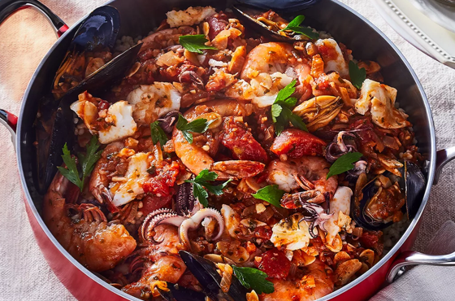
Couscous Alla Trapanese
Prep Time: 20 min | Cook Time: 1 hr | Total Time: 80 min
Ingredients
- 17 oz boxed couscous
- 2 bay leaves
- 1 cinnamon stick
- 10 garlic cloves, smashed (+2, unpeeled)
- ¼ cup extra-virgin olive oil
- 2 large stalks celery, chopped
- 1 small bunch parsley, left whole, with a small amount reserved and chopped for garnish
- ½ cup sliced almonds
- 1 lb fresh tomatoes, peeled
- 4 cups water
- ½ lb large head-on shrimp, heads and bodies separated
- 2 lbs mixed fish and shellfish, such as red snapper, sea bass, calamari, and mussels
- Red pepper flakes, to taste
- Salt and pepper, to taste
- Lemon to garnish, if desired
Directions
- Cook the couscous along with the bay leaves, cinnamon, 2 cloves of unpeeled garlic, and 1 halved onion, according to package instructions. Once cooked, remove the bay leaves, cinnamon, garlic, and onion, and set aside.
- While the couscous is steaming, make the fish stock: In a large pot, warm the olive oil over medium-high heat. Add the chopped onions and smashed garlic cloves, cook until soft, about 3 minutes.
- Add the sliced almonds and peeled tomatoes, cook until the tomato starts to soften, about 3 to 5 minutes. Add water, red pepper, salt, pepper, and the shrimp heads and bodies, and bring to a boil.
- Reduce the heat to a simmer and cook until the tomatoes completely break down, about an hour. Add the remaining fish and shellfish, and simmer until cooked through, about 10 minutes.
- Transfer the fish and shellfish to a separate dish. Strain the fish stock. Pour 3 tablespoons of fish stock over the couscous and let sit, covered, for one hour before serving.
- Serve the couscous topped with the cooked fish, garnished with chopped parsley and lemon, and with the strained fish stock on the side (for pouring over the entire dish, as desired).
Submitted by Teryn Roberts
My family comes from a long line of deep Sicilian roots on my mother's side (photo of great-grandma Caito attached). This recipe reminds me of my ancestral homeland and embodies what I grew up hearing about traditional cuisine on the Sicilian coast. Growing up, we also incorporated a lot of seafood and couscous into our meals, which are just a few Sicilian staples.
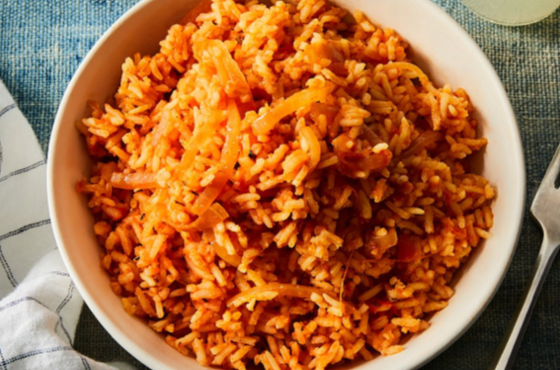
Jollof Rice
Prep Time: 20 min | Cook Time: 30 min | Total Time: 50 min
Ingredients
- ⅓ cup oil (vegetable/canola/coconut, not olive oil)
- 6 medium-sized fresh plum/Roma tomatoes, chooped, OR A 400-gram tin of tomatoes
- 6 fresh, red poblano peppers (or 4 large red bell peppers), seeds discarded
- 3 medium-sized red onions (1 sliced thinly, 2 roughly chopped), divided
- ½ to 1 hot pepper, or to taste (yellow Scotch bonnets are my favourite)
- 3 tbsp tomato paste
- 2 tsp (Carribean/Jamaican-style) curry powder
- 1 tsp dried thyme
- 2 dried bay leaves
- 5 to 6 cups stock (vegetable, chicken, or beef), or water, divided
- 2 tsp unsalted butter (optional), divided
- 4 cups uncooked converted long-grain rice or golden sella basmati, rinsed
- Salt, to taste
- Black and white pepper, to taste
- Extra: sliced onions, tomatoes
Directions
- In a blender, combine tomatoes, red poblano (or bell) peppers, chopped onions, and Scotch bonnets with 2 cups of stock, blend till smooth, about a minute or two. You should have roughly 6 cups of blended mix. Pour into a large pot/ pan and bring to the boil then turn down and let simmer, covered for 10 - 12 minutes
- In a large pan, heat oil and add the sliced onions. Season with a pinch of salt, stir-fry for 2 to 3 minutes, then add the bay leaves, curry powder and dried thyme and a pinch of black pepper for 3 - 4 minutes on medium heat. Then add the tomato paste - stir for another 2 minutes. Add the reduced tomato-pepper-Scotch bonnet mixture, stir, and set on medium heat for 10 to 12 minutes till reduced by half, with the lid on. This is the stew that will define the pot.
- Add 4 cups of the stock to the cooked tomato sauce and bring it to boil for 1 - 2 minutes.
- Add the rinsed rice and butter, stir, cover with a double piece of foil/baking or parchment paper and put a lid on the pan—this will seal in the steam and lock in the flavour. Turn down the heat and cook on low for 30 minutes.
- Stir rice—taste and adjust as required.
- If you like, add sliced onions, fresh tomatoes and the 2nd teaspoon of butter and stir through.
- To make Party Rice, you'll need one more step. Now Party Rice is essentially Smoky Jollof Rice, traditionally cooked over an open fire. However, you can achieve the same results on the stove top. Here's how: Once the rice is cooked, turn up the heat with the lid on and leave to "burn" for 3 to 5 minutes. You'll hear the rice crackle and snap and it will smell toasted. Turn off the heat and leave with the lid on to "rest" till ready to serve. The longer the lid stays on, the smokier. Let the party begin!
Submitted by Clegg Amiolemeh
Of the rice dishes in Nigeria, Jollof rice is my favorite because it was cooked on special occasions only. It takes top skills and many ingredients to cook a delicious Jollof rice! Rather than documenting recipes, in Nigeria, recipes were passed down orally from one generation to the next. Hence, as common as Jollof rice is, no two Jollof rice dishes tasted the same which made the dish more special, mysterious and unique. Since I was a kid, I've always enjoyed a good Jollof rice meal, with chicken, coleslaw, and fried ripe plantain. The attached recipe is similar to the one I use currently.
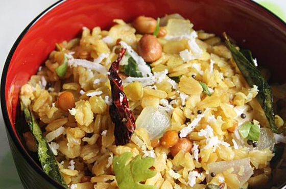
Oats Upma
Prep Time: 10 min | Cook Time: 15 min | Total Time: 25 min
Ingredients
- 1 cup rolled oats, or quick cook oats
- 1 cup water for rolled oats, ½ cup for quick cook oats
- 1½ tbsp oil
- 1 small onion, chopped finely or sliced
- ½ to ¾ cup mix vegetables, optional (chooped ½ small carrot, 2 tbsp peas, 2 beans)
- 1 to 2 green chillies (slit) or broken red chili
- 2 tbsp coriander leaves for garnish
- ½ tsp salt (adjust to taste)
- 2 tbsp grated coconut(optional)
For tempering
- 1 sprig curry leaves
- ½ tsp ginger chopped finely or grated (optional)
- 1 pinch hing (optional)
- ¼ tsp mustard seeds
- ½ tsp cumin or jeera
- ½ tsp chana dal (optional)
- ½ tsp urad dal (optional)
- 2 tbsp peanuts, or 8 to 10 cashew nuts
- ¼ tsp turmeric
Directions
Preparation
- Dry roast 1 cup oats in a wide pan for about 5 minutes until crips. They do not become very crisp. Set this aside to cool.
- Heat a pan with oil. Add cumin, mustard seeds, peanuts, chana dal, and urad dal.
- Fry them, stirring often until peanuts turn golden and aromatic.
- Next add hing, ginger, chili(es), and curry leaves. Fry all of them until the curry leaves turn crisp.
- Then add onion and saute until golden.
- (Optional, if using veggies) Then add vegetables and fry for 2 minutes.
- Sprinkle 2 tsp water. Cover and cook until the veggies are slightly soft.
How to make Oats Upma
- Next sprinkle the salt and tumeric.
- If using rolled oats, then pour 1 cup water. Or if using quick oats, use ½ cup water.
- Mix well and then taste the water. The water has to be slightly salty. If needed, add more salt. Bring it to a boil.
- Transfer the roasted oats and give a gentle mix to incorporate the water with the oats.
- Within 1 to 2 minutes the water will be absorbed. Cover and cook on a low flame for 2 minutes or until alt the moisture is evaporated.
- Add chopped coriander leaves. Mix well.
- When the temperature comes down, pour 1 tbsp lemon juic. You can top it with some fresh grated coconut if you have. It tastes good as is.
- Oats upma is best served with yogurt.

Submitted by Suresh Yarlagadda
Upma is a South Indian dish typically made with semolina (semolina flour is used for pasta). My family recently started putting an american spin on the traditional dish by substituting the semolina with oats. The dish will have a savory and spices forward flavor. Definitely worth the try if you want to mix up your regular breakfast routine.
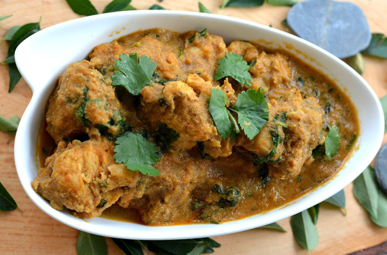
Andhra Chicken Curry
Prep Time: 25 min | Cook Time: 40 min | Total Time: 65 min
Ingredients
- 3 tbsp refined oil
- 1 Bay leaf
- 3 Green cardamom
- 3 cloves
- 1 small cinnamon stick
- 1 onion, sliced
- 1 tbsp ginger-garlic paste
- 1½ lbs chicken (cut into bite-sized pieces)
- 1 tsp turmeric
- Salt to taste
- 2 cups water
- 2 green chillies (slit)
- Handful of curry leaves
- 2 tsp red chilli powder
- 2 tbsp cahew nuts - poppy seed past (Soak 15 cashews and 1 tbsp poppy seed in a cup of milk for an hour. Grind it into a paste.)
- 2 tsp chicken masala
- 2 tsp Kasoori methi
- 1 tsp garam masala
- 2 tsp coriander powder
- Coriander leaves, chopped, to garnish.
Directions
- In a wok or large pan add refined oil (ghee or olive oil). Add a bay leaf, green cardamom, cloves, cinnamon. Let them release the aroma.
- Now add onions. Saute till golden brown and then add the ginger-garlic paste. Mix and add the chicken pieces. Saute till they start to color a bit
- Now add the turmeric and salt. Toss and add water.
- Add the green chilli and curry leaves. Let the curry simmer.
- Add the red chilli powder, cashew nut -poppy seed paste, chicken masala, kasoori methi, garam masala and dhaniya powder. Mix well and let the curry simmer till the chicken is cooked. Add more water if required.
- Garnish with coriander leaves and serve with steamed rice.
Submitted by Suresh Yarlagadda
This recipe is not for the faint of heart but it is dear to mine. My mother is from a small town outside Vijayawada, arguably the birthplace of this amazing dish: Andhra Chicken Curry or "Andhra Kodi Kura". The number of ingredients may seem alarming but it's an easy dish to cook nonetheless...although I must warn you...the dish does pack a punch.
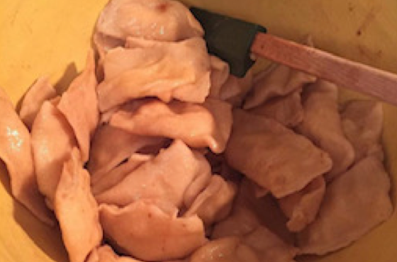
Perogies
Prep Time: 15 min | Cook Time: 45 min | Total Time: 1 hr
Ingredients
Dough:
- 2 cup all-purpose flour, plus more for flouring surface
- 1 egg
- ½ cup water (luke warm)
- 2 tbsp oil
Filling:
- 1 package of instant mashed potatoes (I prefer to use the loaded), OR
- 2 cups mashed potateos
Additional
- 1 stock pot, ¾ full of water for boiling (I use an 8 quart)
- 1 stick salted butter, browned in a small pan
- 1 onion, sliced and browned (for serving if desired)
- Sour cream, for serving
Directions
- In a large bowl, combine the ingredients for the dough and work. Depending on the humidity you may have to add more flour. The dough should be soft and malleable but not sticky. Cover and aside to rest.
- While the dough is resting- prepare the mashed potatoes as directed on the package. If you choose to make homemade mashed potatoes, make sure they are warm but not hot. This allows for easier stuffing.
- Bring your large pot of water to a boil and allow it to continue to gently boil as you prepare the perogies.
- Also begin melting your butter in a small skillet or sauce pan and allow it to slowly cook until it browns.
- When the potatoes are finished- flour your rolling surface and separate the dough into fourths. Roll a section of the dough into a large square to about a 1/8" thick, adding flour as needed. Cut dough into 2"x2" squares and remove any scrap dough and place it back in the bowl to re-roll.
- Gently picking up a dough square, use a spoon to place about a tablespoon of mashed potatoes in the center, fold the square in half and pinch the edges to seal. If the dough is not sealing, you can wet your fingers and run it along the edges to melt the seam. Set aside and repeat with the rest of the precut squares.
- Once you have completed all the perogies, gently drop them into the boiling water and allow them to cook until they float (1-2 min). Use a slotted spoon to remove the perogies and place in a strainer, allowing your water to continue to simmer for the next batch.
- Roll out the next quarter or dough and repeat as above. Once you place that batch into the pot to cook, you can move your previous batch from the strainer to a large bowl, cover with about 1/4 of the browned butter and stir. Repeat these steps until you have used all the dough or mashed potatoes.
- Perogies are traditionally served with cooked onions and sour cream.
- Perogies will keep for about 1 week and can be frozen. I prefer to heat mine in a skillet to make them crispy.You can experiment with different flavors of mashed potatoes and fillings.
Submitted by Anji Paumier
This recipe is one I learned because my Grammy (mom's mom) was Polish. She never carried any traditions from her family down because they were ashamed of their heritage once they came to America. My Grammy was an amazing cook and every time I make these, it is in her honor.